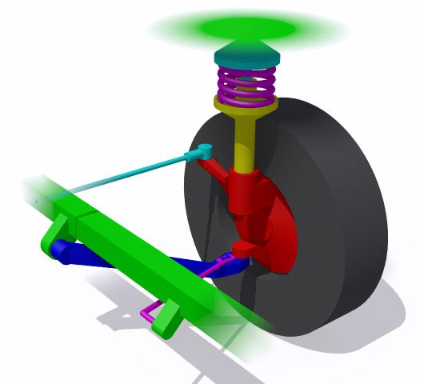

Nápravy
Přenášejí tíhovou sílu karoserie, hnací, brzdné a setrvačné síly. Svým pohybem umožňují řízení vozidla a odpružení.
Nápravy podle řiditelnosti:
- řízená (řídící, řiditelná)
- neřízená
Nápravy podle brzditelnosti:
- 
- brzděná
- nebrzděná
Nápravy podle pohonu:
- hnací (hnaná, poháněná, záběrová)
- volná (nehnaná, nepoháněná)
V souvislosti s pohonem náprav se používá tzv. znak náprav obsahující informaci o celkovém počtu náprav a o tom, kolik jich je hnaných. Nejběžnější uspořádání má znak náprav 4x2 (čtyři kola celkem a z toho dvě hnaná). Pohon obou náprav je označován 4x4. Zmatení může nastat u náprav s dvojmontáží. Toto zaužívané označování tedy používá zjednodušení 1 náprava = 2 kola.
Podle konstrukce rozlišujeme:
- Nápravu McPherson
- Víceprvkovou nápravu
- Lichoběžníkovou nápravu
- Úhlovou nápravu
- Kyvadlovou náprava
- Tuhou nápravu
- Nápravu De Dion
- Chapmanovu napravu